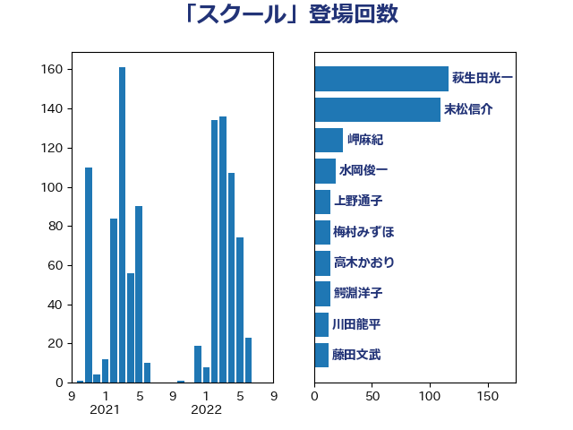

単語「スクール」

| 萩生田光一 | 自由民主党 | 116 回 |
| 末松信介 | 自由民主党 | 109 回 |
| 岬麻紀 | 日本維新の会 | 25 回 |
| 水岡俊一 | 立憲民主党 | 19 回 |
| 上野通子 | 自由民主党 | 14 回 |
| 梅村みずほ | 日本維新の会 | 14 回 |
| 高木かおり | 日本維新の会 | 14 回 |
| 鰐淵洋子 | 公明党 | 14 回 |
| 川田龍平 | 立憲民主党 | 13 回 |
| 藤田文武 | 日本維新の会 | 13 回 |
| 城井崇 | 立憲民主党 | 12 回 |
| 堀場幸子 | 日本維新の会 | 12 回 |
| 佐々木さやか | 公明党 | 11 回 |
| 山田勝彦 | 立憲民主党 | 11 回 |
| 寺田学 | 立憲民主党 | 10 回 |
| 掘井健智 | 日本維新の会 | 10 回 |
| 伊藤孝恵 | 国民民主党 | 9 回 |
| 岸田文雄 | 自由民主党 | 9 回 |
| 松沢成文 | 日本維新の会 | 9 回 |
| 青山大人 | 立憲民主党 | 9 回 |
| 斎藤嘉隆 | 立憲民主党 | 8 回 |
| 野田聖子 | 自由民主党 | 8 回 |
| 荒井優 | 立憲民主党 | 7 回 |
| 青山周平 | 自由民主党 | 7 回 |
| 中曽根康隆 | 自由民主党 | 6 回 |
| 宮崎政久 | 自由民主党 | 6 回 |
| 平林晃 | 公明党 | 6 回 |
| 浮島智子 | 公明党 | 6 回 |
| 舩後靖彦 | れいわ新選組 | 6 回 |
| 道下大樹 | 立憲民主党 | 6 回 |
| 仁木博文 | 無所属 | 5 回 |
| 勝目康 | 自由民主党 | 5 回 |
| 勝部賢志 | 立憲民主党 | 5 回 |
| 奥下剛光 | 日本維新の会 | 5 回 |
| 谷田川元 | 立憲民主党 | 5 回 |
| 務台俊介 | 自由民主党 | 4 回 |
| 山本左近 | 自由民主党 | 4 回 |
| 横沢高徳 | 立憲民主党 | 4 回 |
| 笠浩史 | 無所属 | 4 回 |
| 西岡秀子 | 国民民主党 | 4 回 |
| 上杉謙太郎 | 自由民主党 | 3 回 |
| 下村博文 | 自由民主党 | 3 回 |
| 下条みつ | 立憲民主党 | 3 回 |
| 丹羽秀樹 | 自由民主党 | 3 回 |
| 古屋範子 | 公明党 | 3 回 |
| 塩川鉄也 | 日本共産党 | 3 回 |
| 宮本周司 | 自由民主党 | 3 回 |
| 山崎正恭 | 公明党 | 3 回 |
| 山田太郎 | 自由民主党 | 3 回 |
| 川崎ひでと | 自由民主党 | 3 回 |
| 木原稔 | 自由民主党 | 3 回 |
| 森山浩行 | 立憲民主党 | 3 回 |
| 池田佳隆 | 自由民主党 | 3 回 |
| 石原正敬 | 自由民主党 | 3 回 |
| 穂坂泰 | 自由民主党 | 3 回 |
| 芳賀道也 | 国民民主党 | 3 回 |
| 三木圭恵 | 日本維新の会 | 2 回 |
| 中川正春 | 立憲民主党 | 2 回 |
| 中川郁子 | 自由民主党 | 2 回 |
| 吉田統彦 | 立憲民主党 | 2 回 |
| 坂本哲志 | 自由民主党 | 2 回 |
| 大串正樹 | 自由民主党 | 2 回 |
| 宮口治子 | 立憲民主党 | 2 回 |
| 小野泰輔 | 日本維新の会 | 2 回 |
| 平井卓也 | 自由民主党 | 2 回 |
| 柴田巧 | 日本維新の会 | 2 回 |
| 根本幸典 | 自由民主党 | 2 回 |
| 森屋隆 | 立憲民主党 | 2 回 |
| 浅野哲 | 国民民主党 | 2 回 |
| 深澤陽一 | 自由民主党 | 2 回 |
| 渡辺創 | 立憲民主党 | 2 回 |
| 湯原俊二 | 立憲民主党 | 2 回 |
| 片山大介 | 日本維新の会 | 2 回 |
| 牧島かれん | 自由民主党 | 2 回 |
| 石垣のりこ | 立憲民主党 | 2 回 |
| 金村龍那 | 日本維新の会 | 2 回 |
| 音喜多駿 | 日本維新の会 | 2 回 |
| 三浦信祐 | 公明党 | 1 回 |
| 上田清司 | 国民民主党 | 1 回 |
| 中司宏 | 日本維新の会 | 1 回 |
| 中村裕之 | 自由民主党 | 1 回 |
| 中野洋昌 | 公明党 | 1 回 |
| 中野英幸 | 自由民主党 | 1 回 |
| 伊藤孝江 | 公明党 | 1 回 |
| 吉川元 | 立憲民主党 | 1 回 |
| 吉川赳 | 無所属 | 1 回 |
| 吉田とも代 | 日本維新の会 | 1 回 |
| 吉田豊史 | 日本維新の会 | 1 回 |
| 坂本祐之輔 | 立憲民主党 | 1 回 |
| 塩谷立 | 自由民主党 | 1 回 |
| 大串博志 | 立憲民主党 | 1 回 |
| 大島敦 | 立憲民主党 | 1 回 |
| 宮本徹 | 日本共産党 | 1 回 |
| 小林茂樹 | 自由民主党 | 1 回 |
| 山田賢司 | 自由民主党 | 1 回 |
| 山際大志郎 | 自由民主党 | 1 回 |
| 岸信夫 | 自由民主党 | 1 回 |
| 平沢勝栄 | 自由民主党 | 1 回 |
| 後藤茂之 | 自由民主党 | 1 回 |
| 杉本和巳 | 日本維新の会 | 1 回 |
| 松本剛明 | 自由民主党 | 1 回 |
| 林芳正 | 自由民主党 | 1 回 |
| 柚木道義 | 立憲民主党 | 1 回 |
| 櫛渕万里 | れいわ新選組 | 1 回 |
| 櫻井周 | 立憲民主党 | 1 回 |
| 沢田良 | 日本維新の会 | 1 回 |
| 片山さつき | 自由民主党 | 1 回 |
| 石井啓一 | 公明党 | 1 回 |
| 石川博崇 | 公明党 | 1 回 |
| 石川昭政 | 自由民主党 | 1 回 |
| 竹内譲 | 公明党 | 1 回 |
| 篠原豪 | 立憲民主党 | 1 回 |
| 若宮健嗣 | 自由民主党 | 1 回 |
| 茂木敏充 | 自由民主党 | 1 回 |
| 菅義偉 | 自由民主党 | 1 回 |
| 西村康稔 | 自由民主党 | 1 回 |
| 谷合正明 | 公明党 | 1 回 |
| 赤池誠章 | 自由民主党 | 1 回 |
| 金子恵美 | 立憲民主党 | 1 回 |
| 鈴木俊一 | 自由民主党 | 1 回 |
| 階猛 | 立憲民主党 | 1 回 |
| 高木啓 | 自由民主党 | 1 回 |
| 高見康裕 | 自由民主党 | 1 回 |
| 高階恵美子 | 自由民主党 | 1 回 |